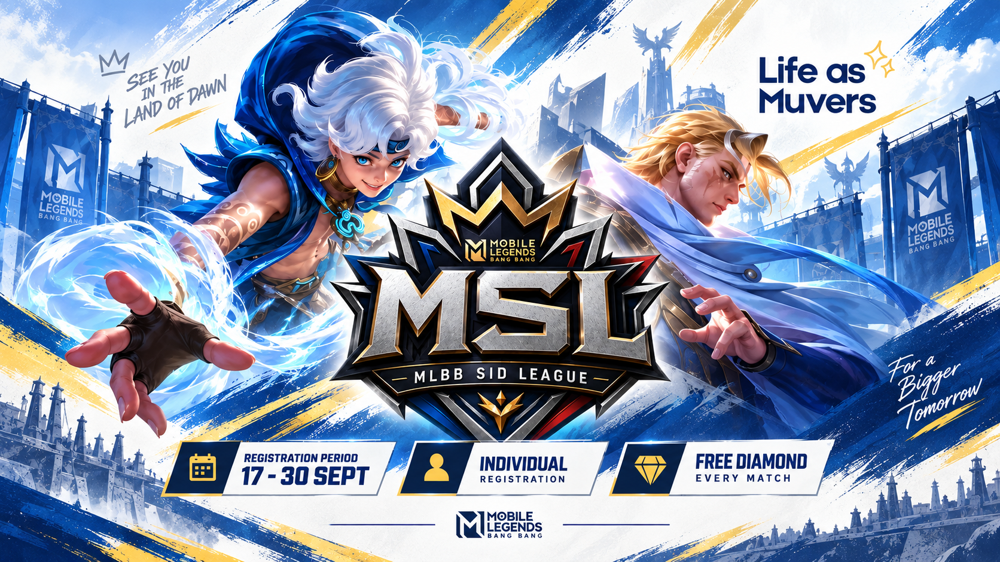
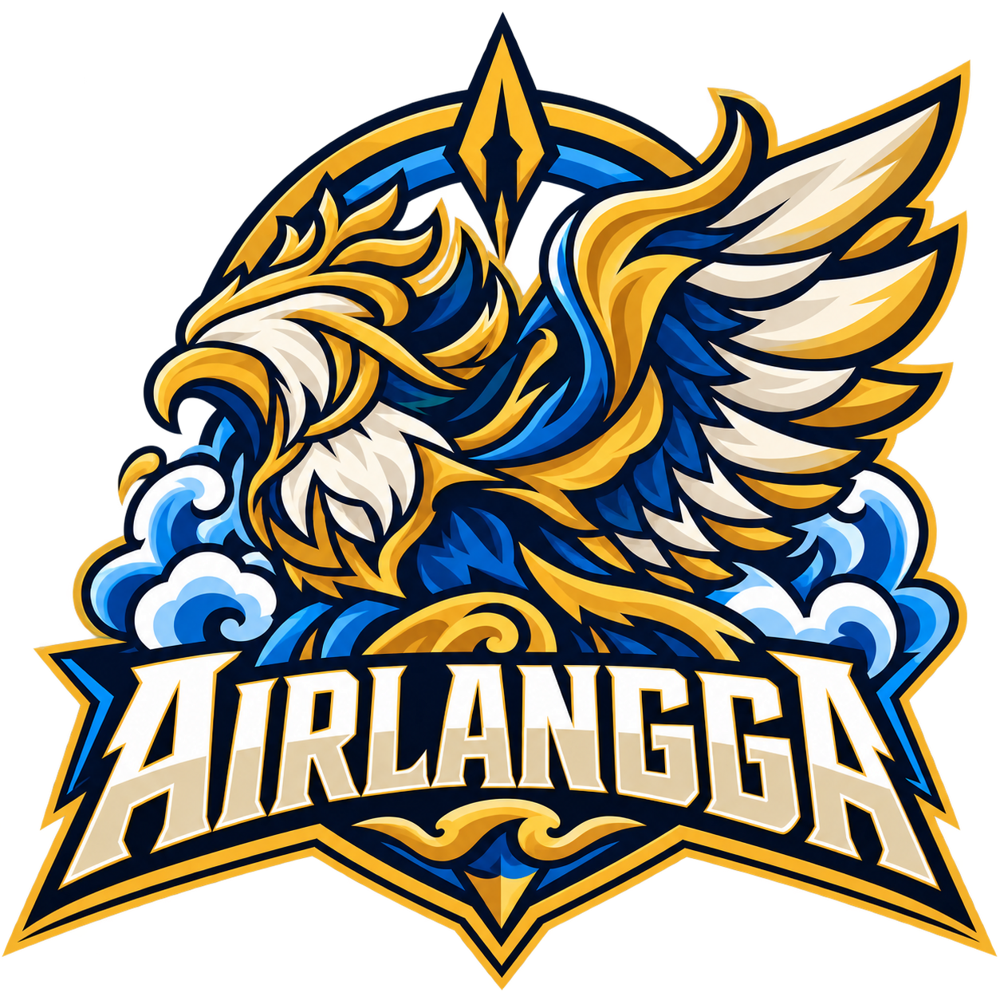
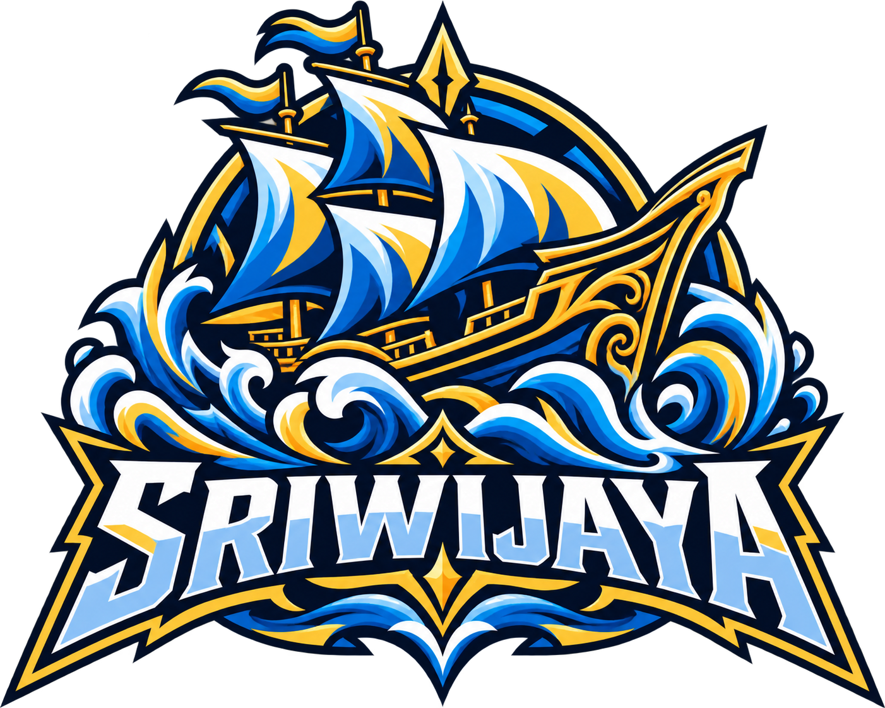
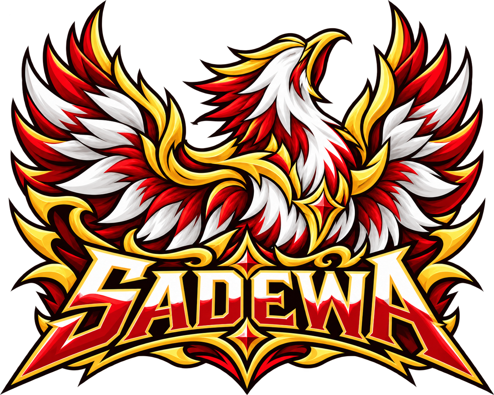
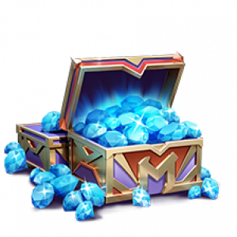
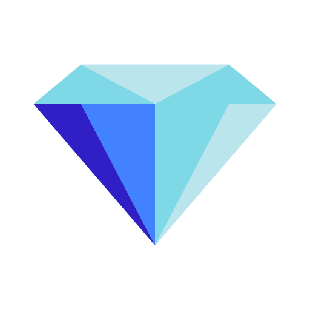

Connect
Kenali rekan dari divisi lain.
Kenali liganya. Pahami aturannya.
Bersiap untuk perjalanan bersama di Land of Dawn.

*Pekan 4 dan 7 berlangsung Selasa–Rabu. Liga: 6 Oktober – 10 Desember 2026.
Latar belakang Mobile Legends SID League
Mobile Legends merupakan salah satu game MOBA populer yang tidak hanya menjadi sarana hiburan, tetapi juga mampu membangun kerja sama tim, komunikasi, strategi, dan sportivitas. Melalui Muvers Club Esport Mobile Legend, Mobile Legends SID League (MSL) dihadirkan sebagai upaya untuk menggerakkan kembali keaktifan kegiatan club dan menciptakan aktivitas positif yang meningkatkan engagement antar anggota Muvers.
Dengan pembentukan team secara random dan lintas divisi, MSL menjadi wadah untuk saling mengenal, berinteraksi, dan membangun kolaborasi dengan rekan kerja di luar divisi masing-masing. Pertandingan yang sehat dan menyenangkan diharapkan mempererat kebersamaan serta meningkatkan sinergi dan kolaborasi antar karyawan PT. SID.
Kenali rekan dari divisi lain.
Bangun strategi sebagai satu team.
Jaga sportivitas di setiap game.
Timeline dan ketentuan umum
| Tahap | Tanggal |
|---|---|
| Open Registration | 17 – 30 September 2026 |
| Technical Meeting | 2 Oktober 2026 |
| Running League | 6 Oktober – 10 Desember 2026 |
| Pembagian Reward | 14 – 15 Desember 2026 |
MSL 2026 adalah event internal untuk seluruh karyawan SID.
Setiap team wajib menjunjung tinggi sportivitas dan mematuhi seluruh peraturan panitia.
Panitia berhak mengubah atau menyesuaikan peraturan apabila diperlukan demi kelancaran turnamen.
Struktur dan keanggotaan team
Team disusun melalui generate random team oleh sistem berdasarkan role yang telah didaftarkan.
Setiap individu diharapkan bermain sesuai role yang didaftarkan dan dikuasai.
Anggota team sangat diperbolehkan saling bertukar role di dalam game jika membutuhkan strategi alternatif.
Setiap team memilih nama dan logo dari identitas yang disediakan panitia, dengan tema Indonesia Heritage.



Format event dan regulasi klasemen
Regular season saja, tanpa playoff dan tanpa sistem Home/Away. Seluruh match menggunakan Best of 3 (BO3).
First pick bergantian dengan Game 2.
Giliran first pick untuk team lainnya.
Tanpa ban dan free hero.
Ban 5 hero: 3 hero pada fase 1 dan 2 hero pada fase 2.
Bebas memilih hero tanpa terkecuali. Hero yang dipilih antar team boleh sama.
Peraturan teknis pertandingan
Team wajib memastikan koneksi internet dan perangkat dalam keadaan baik. Gangguan teknis dari sisi pemain bukan tanggung jawab panitia.
Maksimal satu kali pause per team, dengan durasi maksimal 2 menit.
Dilarang menggunakan aplikasi pihak ketiga yang memberikan keuntungan tidak fair. Jika ditemukan kecurangan, team langsung didiskualifikasi.
Jika 1–2 pemain berhalangan hadir atau bermain, team boleh meminjam pemain dari team lain yang sedang tidak bermain.
Reward per pemain yang bermain pada setiap match
Reward mengikuti hasil pertandingan team.

| Hasil team | Skor | Diamonds / pemain |
|---|---|---|
| Kalah | 0–2 |  5 |
| Kalah | 1–2 | 12 |
| Menang | 2–1 | 19 |
| Menang | 2–0 | 28 |
| Kalah WO · Tidak bermain | WO | 0 |
Jika team pemuncak klasemen berjumlah 6 pemain, setiap pemain mendapatkan hak yang sama untuk reward WDP.
Reward Diamonds diterima oleh pemain yang bermain di setiap match. Pembagian reward: 14–15 Desember 2026.
Etika dan sportivitas
Peserta wajib menjaga etika dalam pertandingan maupun komunikasi.
Flaming, toxic chat, atau perilaku tidak sportif dapat dikenakan sanksi berupa kehilangan reward.
Hormati keputusan dan jalani pertandingan dengan semangat sportivitas.
Penayangan dan dokumentasi
Pertandingan akan diusahakan untuk disiarkan langsung melalui kanal YouTube Channel Team Tech.
Referee akan mengusahakan rekaman pertandingan sebagai dokumentasi.
Kenali rekan satu team dan cek jadwal sebelum match pertama.